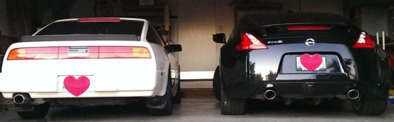

-
Assuming you could change or make adjustable any aspect of your steering, what would it be?0Bumpsteer tuning0%0Ratio quickening0%0Ackerman reduction0%0Balljoint location0%0The poll is expired.
-
Wow you guys suck… no votes? -
I voted cheer up need to get that steering ratio down more like 2 turns full lock and I'd be happy2009 370z sport/tour 6mt Mag black
1989 300zx turbo 5mt Moon glow pw
 -
Yea, I did the same.Feedback- viewtopic.php?f=18&t=19840

Copyright © 2006–. All rights reserved. Privacy Policy